Centro Interpretação Almada Velha
(Interpretation Center of Old Almada)
Filipe Cruz
WHOIS...
- MSc Informatics Engineer (FEUP - Porto)
- 2007 - 2008 - Porto Digital, Porto
- 2008 - 2011 - Take The Wind, Coimbra
- 2011 - 2013 - Freelance, Helsinki
- 2013 - 2014 - Artica, Caparica
TOC
- Specification
- Map Table
- Control Tablets
- Computer Vision
- Network
- Proximity Sensors
- Stage Projection
- Other
Specification
Specification
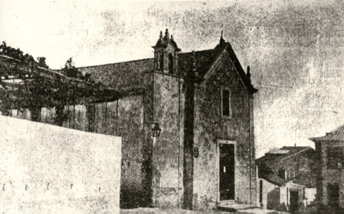
Ermida do Espírito Santo /
Salão das Carochinhas
Specification
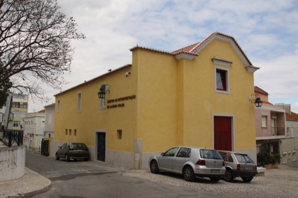
Centro de Interpretação de Almada Velha
flyer
Map Table
Map Table
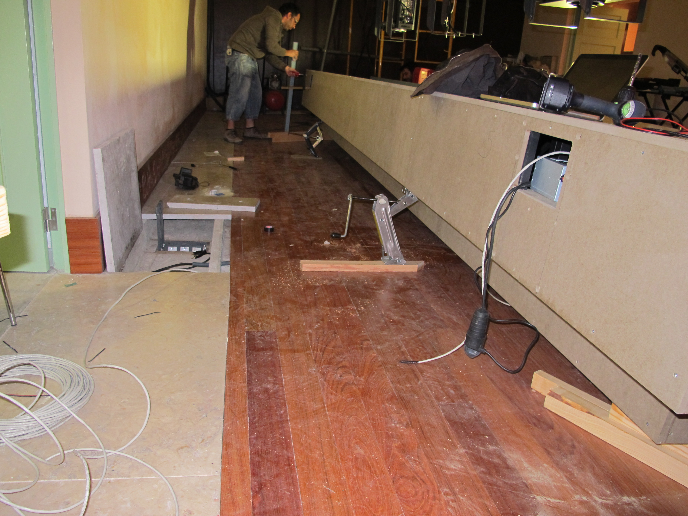
Iron and Wood Structure
Map Table
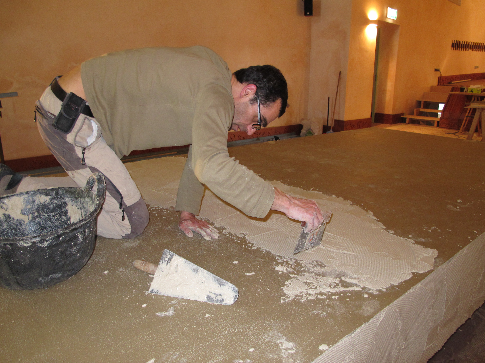
Covered in sand based concrete
Map Table
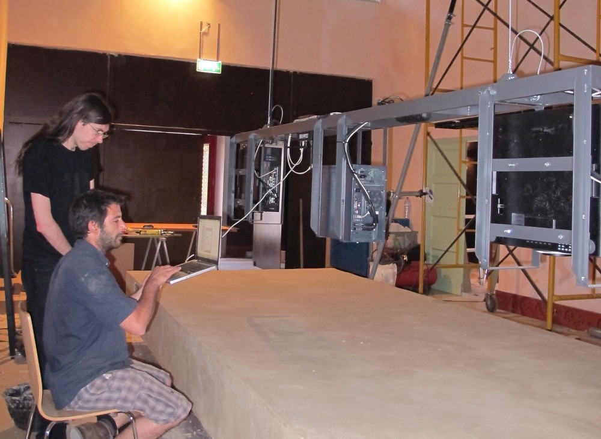
Hanging Projectors Structure
Map Table
- display text, images and video
- communication
- background glowing effect
Map Table
- (html5 + css3)
- (websockets)
- (webgl canvas)
Map Table
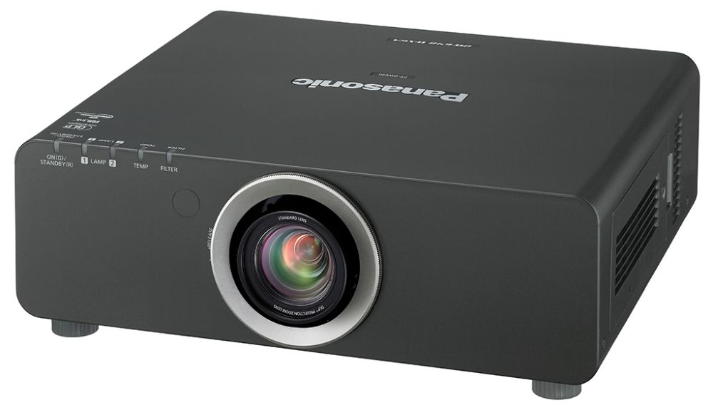
2x Panasonic DW 640L
Map Table
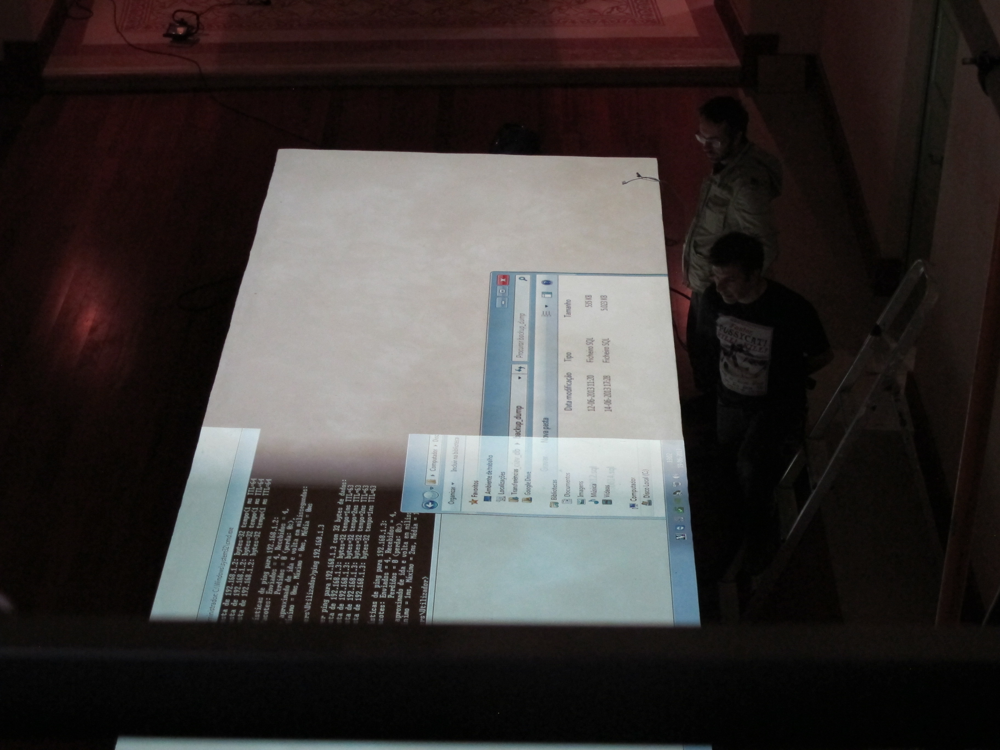
problems with same resolution
Map Table
problems with hardware edge blending
(hardware didn't overlap 2 sources
without loss of data on middle)
Map Table
software edge blending
(awesomium to render browser to image)
(libcinder to implement image overlap)
Map Table
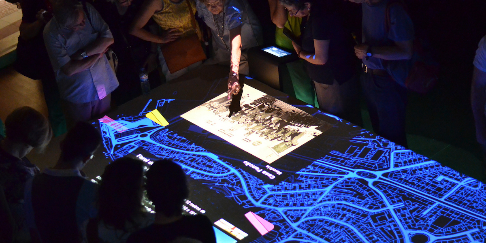
Map Table

led strip below
(Arduino)
Control Tablets
Control Tablets
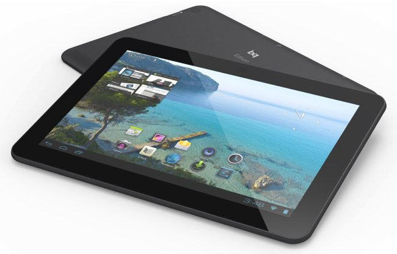
4x bq Edison (Android)
Control Tablets
problems with phantom touches
Control Tablets
(energy supplies)
Control Tablets
interface fast prototype
(phonegap)
Control Tablets
problem on windows
detecting target android device
(had to find vendor id on a mac
and edit config file manually)
Control Tablets
problem with websockets on android
(had to test 3 different plugins)
Control Tablets
problem with videos on android
(video plugins only work on some models)
(problem with fullscreen, autoplay, localfiles)
Computer Vision
Computer Vision
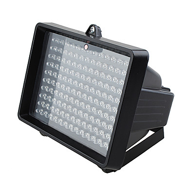
cctv illuminator
Computer Vision
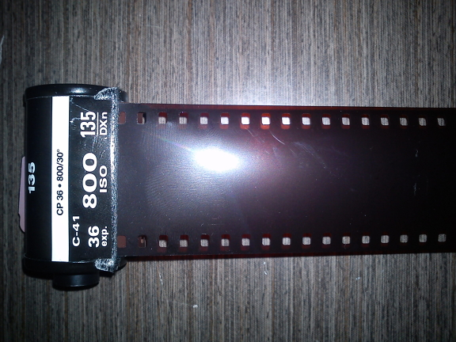
used film
Computer Vision
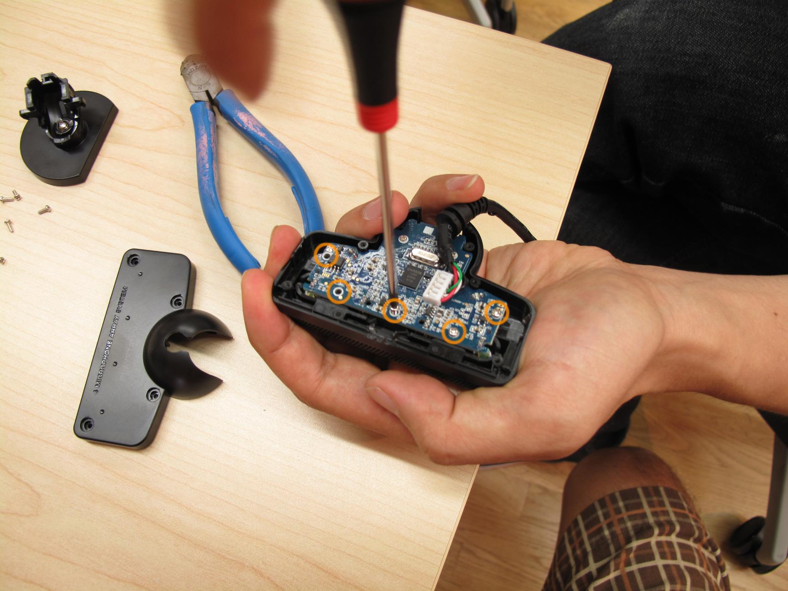
psEye
Computer Vision
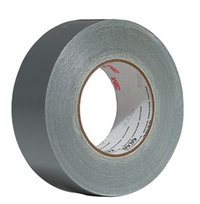
m4d h4xX0r sk1llz
Computer Vision
problems with drivers
(not recognizing, sometimes freezing)
Computer Vision
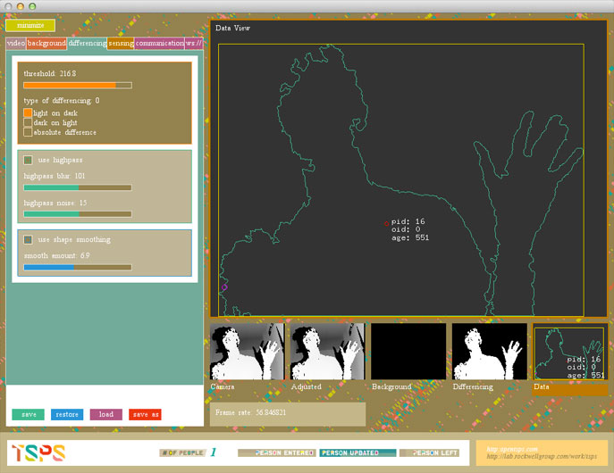
OpenTSPS (send data through websockets)
Computer Vision
problems connecting websockets
(default channel was "", should be "/")
Computer Vision
problems with light changes
(calibrate, progressive recapture)
Network
Network
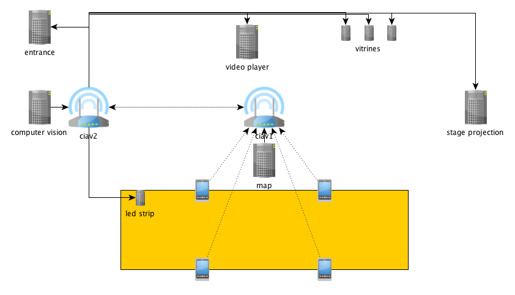
Network
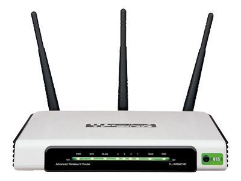
2x TP-Link WR941ND
Network
- wireless bridge
- too many connections after a few hours
Network
- (dd-wrt)
- (schedule night reboot)
Network
Node.js server connecting with:
OpenTSPS (via websockets)
4 Android Tablets (via websockets)
Map Application (via websockets)
4 Arduinos ledstrips (via TCP)
Proximity Sensors
Proximity Sensors
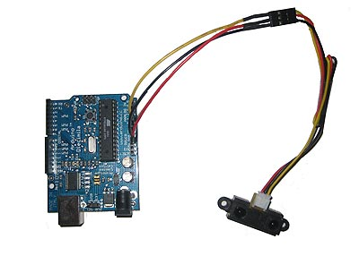
Proximity Sensors
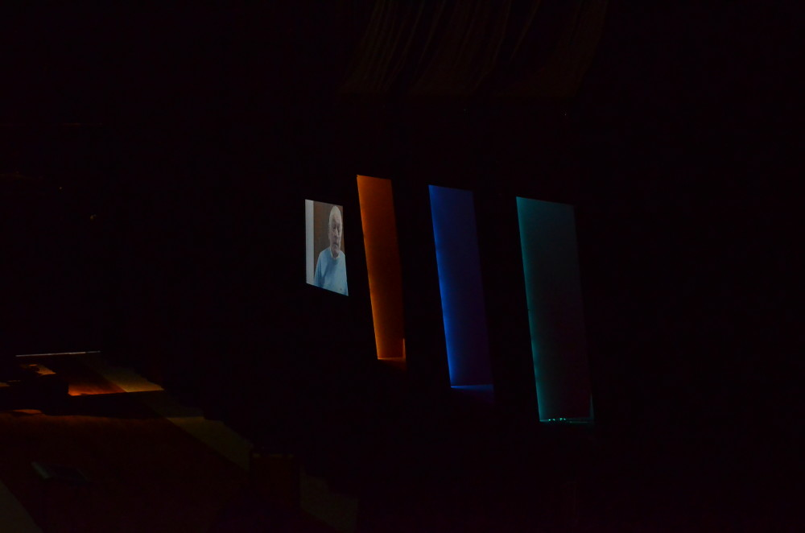
Proximity Sensors

Display cabinets
(led spotlights)
Proximity Sensors
Interactive Video Player
(vlc server +
python script +
arduino with proximity sensors)
Stage Projection
Stage Projection
Video playing on 3 walls
(Einstein Video Server +
Matrox splitter)
Stage Projection
problem finding BIOS auto power on
(computer not easily accessible for manual boot)
Stage Projection
problem video freezing sometimes
(out of memory?!
schedule reboot every night)
Other
Other
problems with maintenance
(disable auto-updates
install remote access
process re-launch monitoring
schedule periodic reboots
everything auto-launch)
Other
problems with power loss
computer booting to bios
(buy an UPS)
Thanks!
Questions?